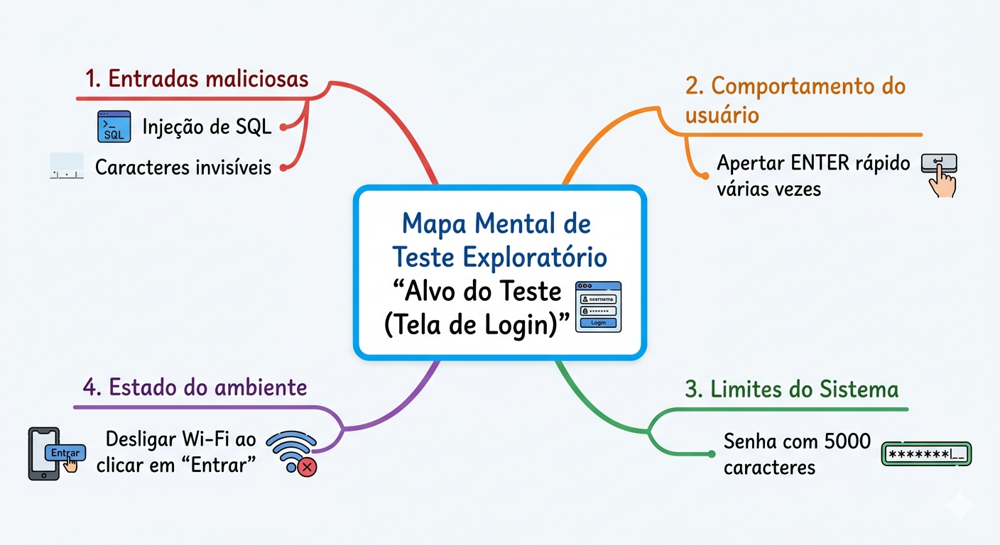
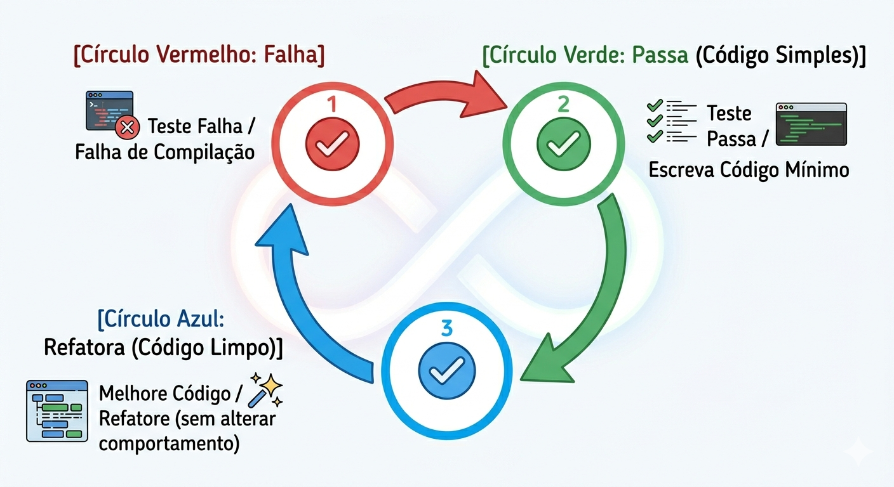
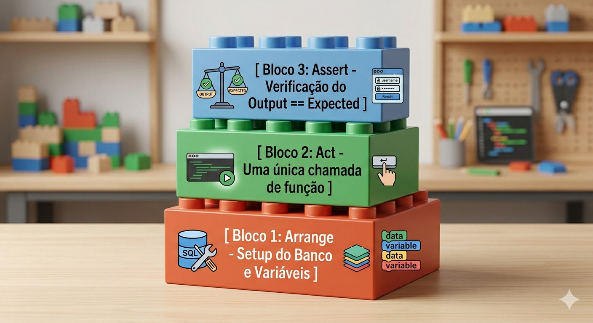

Descrição: Aplicação de metodologias de testes exploratórios (heurísticas) para identificar falhas não mapeadas. Introdução à automação e design robusto de software com TDD (Red-Green-Refactor), Padrão AAA e o framework Pytest, visando isolamento e previsibilidade no código.
O mercado ágil de desenvolvimento não perdoa a lentidão nem a falta de qualidade.
Imagine que nossa equipe acabou de lançar um aplicativo de e-commerce durante a Black Friday. Os roteiros tradicionais de testes passaram com sucesso, mas, logo na primeira hora, usuários reais descobrem que ao "clicar rapidamente e duas vezes" no botão de compra, o frete fica zerado.
Os roteiros fixos e mecânicos não pegaram essa falha. É nesse momento de caos que entra a intuição afiada de um testador utilizando Testes Exploratórios guiados por heurísticas e, posteriormente, a segurança inabalável de testes automatizados com TDD para garantir que esse erro nunca mais retorne.
Hoje, nós vamos unir a criatividade investigativa de um "hacker" com o rigor de um engenheiro de software.
Vocês já conseguiram quebrar um jogo ou encontrar um bug em um aplicativo simplesmente porque começaram a apertar os botões fora da ordem lógica esperada pela tela? Como foi essa experiência?
Vamos decompor esses conceitos para que fiquem ainda mais claros. Imagine que testar um software é como explorar uma caverna desconhecida: você pode seguir um mapa rígido ou pode usar sua intuição de explorador para encontrar passagens secretas.
Aqui está uma explicação didática dividida em três pilares:
Diferente dos testes tradicionais, onde você segue uma "receita de bolo" (script), no Teste Exploratório você é o autor e o executor ao mesmo tempo.
O Error Guessing (Descoberta de Erro) é a nossa "bola de cristal" baseada em fatos. Não é um chute aleatório; é um palpite educado.
Sabe quando você olha para um formulário e pensa: "Certo, se eu colar um texto de 50 parágrafos aqui, esse sistema vai travar"? Isso é Error Guessing. Você usa:
| Caminho Feliz | Error Guessing (Casos de Borda) |
|---|---|
| Digitar um nome comum. | Deixar o campo vazio ou usar emojis. |
| Comprar 1 item no carrinho. | Tentar comprar -1 item ou 999.999 itens. |
| Clicar em "Salvar" uma vez. | Clicar em "Salvar" dez vezes seguidas bem rápido. |
O que diferencia um robô de um testador exploratório são as Soft Skills:
O Teste Exploratório é a estratégia de navegar pelo sistema com liberdade, enquanto o Error Guessing é a ferramenta mental que nos diz onde cavar para encontrar os bugs mais escondidos.

Embora exploratório seja muito "manual", nós usamos scripts simples para automatizar o Error Guessing. Python
# Simulador de Error Guessing em uma função de divisão de preços
def calcular_parcela(preco_total, numero_parcelas):
if numero_parcelas <= 0:
raise ValueError("Número de parcelas deve ser maior que zero.")
return round(preco_total / numero_parcelas, 2)
# Script rápido para injetar valores bizarros (Testando heurísticas)
casos_de_borda = [
(1000.0, 0), # Divisão por zero
(-50.0, 2), # Preço negativo
(999999999999, 12), # Valor absurdamente alto
(100.0, -5) # Parcelas negativas
]for preco, parcela in casos_de_borda:
try:
resultado = calcular_parcela(preco, parcela)
print(f"Sucesso: {preco} em {parcela}x = {resultado}")
except Exception as e:
print(f"Falha capturada (Esperada ou Bug!): {e}")TDD (Test-Driven Development), ou Desenvolvimento Orientado a Testes, é como construir uma casa começando pela planta e pela inspeção, antes de colocar o primeiro tijolo.
Em vez de escrever o código e depois rezar para que ele funcione, você define o que é o "sucesso" antes de começar.
Aqui está o detalhamento desse ciclo que transforma a forma como escrevemos software:
Imagine que você é um artesão. O TDD garante que cada peça que você produz seja testada individualmente antes de ser montada no conjunto.
Esse processo ocorre em três etapas cíclicas:
Nesta etapa, você escreve um teste para uma funcionalidade que ainda não existe.
O objetivo: O teste deve falhar. Por que fazer isso? Para garantir que o teste realmente funciona e que ele não está passando por "acidente". Isso prova que existe um requisito que o sistema ainda não atende.
Agora, você escreve o código da funcionalidade. Mas atenção: a regra aqui é o minimalismo.
O objetivo: Fazer o teste passar o mais rápido possível.
O "Código Feio": Não se preocupe com elegância, performance ou arquitetura perfeita agora. Se o teste pede que uma função some 2+2, e você escrever return 4, o teste passará. O foco é sair da zona de falha.
Com o teste brilhando em verde (sucesso), você tem uma rede de segurança para melhorar o que fez.
O objetivo: Limpar o código, remover duplicidades, melhorar nomes de variáveis e aplicar padrões de projeto.
Muitos desenvolvedores sentem a tentação de pular direto para o código. No entanto, o TDD oferece vantagens estratégicas:
É como um GPS. Primeiro você diz para onde quer ir (Red), o GPS traça a rota mais rápida, mesmo que seja por ruas apertadas (Green), e depois você decide se quer ajustar o caminho para passar por uma estrada mais bonita ou evitar pedágios (Refactor).

Usando pytest para seguir o TDD na criação de um validador de cupons. Python
import pytest
# 1. RED: Escrevemos este teste primeiro!
def test_deve_aceitar_cupom_valido_com_espacos_e_minusculo():
# Passamos um dado bagunçado para forçar a regra de negócio
resultado = validar_cupom(" senai20 ")
assert resultado is True
# 2. GREEN: O código simples que faz o teste passar
def validar_cupom (cupom):
# 3. REFACTOR: Melhorando o código sem quebrar o teste verde
cupons_validos = ["SENAI20", "PROMO10"]
return cupom.upper().strip() in cupons_validosPara que um teste seja confiável, ele precisa ser como um experimento de laboratório: isolado de influências externas e organizado para que qualquer pessoa entenda o que está sendo testado.
Vamos entender por que o isolamento é vital e como o padrão AAA coloca ordem na casa.
Imagine que você tem dois testes: o Teste A cria um usuário e o Teste B deleta um usuário. Se o Teste B rodar antes do Teste A, ele pode tentar deletar algo que ainda não existe e falhar. Isso é um teste instável (flaky test).
É aqui que você "monta o palco". Você prepara tudo o que o teste precisa para rodar.
É o momento da ação principal. Você executa a funcionalidade que quer testar.
É a hora da verdade. Você compara o resultado obtido com o resultado esperado.
Seguir essa anatomia transforma o código do teste em uma documentação técnica.
Se o seu bloco Act estiver ficando muito grande ou com muitas ações, talvez você esteja tentando testar coisas demais em um único teste. O ideal é: Um objetivo por teste.

Python
def aplicar_desconto(valor_carrinho, valor_desconto):
return max(0, valor_carrinho - valor_desconto)
#Uma função que retira um valor do total, limitando a zero para não dar saldo negativo.
def test_aplicar_desconto_nao_deve_resultar_em_valor_negativo():
# ARRANGE (Delimitador visual organizando o pensamento.)
carrinho_atual = 50.0
cupom_gigante = 200.0
valor_esperado = 0
# ACT (Momento da ação única e objetiva.)
resultado = aplicar_desconto(carrinho_atual, cupom_gigante)
# ASSERT (A checagem da verdade.)
assert resultado == valor_esperadoPergunta: No dia a dia da empresa, não tem tempo para TDD. O que eu faço?
Resposta: A pressa é inimiga do código sustentável. Você pode negociar prazos mostrando que testes não são "trabalho extra", mas sim prevenção de bugs que parariam o servidor de produção à noite. Use as heurísticas para priorizar e automatizar primeiramente o "núcleo de negócio" vital.
Pergunta: Teste exploratório exige documentação pesada?
Resposta: Não! Em vez de escrever centenas de casos de uso (planilhas fixas), usamos sessões focadas e documentamos apenas os "Mapas Mentais" e os bugs críticos encontrados (por meio de ferramentas de registro de defeito).
Pergunta: O Pytest é melhor que a biblioteca unittest nativa do Python?
Resposta: Ambos resolvem o problema, mas a adoção do Pytest pela indústria se deve à sua simplicidade (uso direto do assert), falta de necessidade de criar classes complexas para testes simples, e o poder das fixtures no isolamento do código.
Pergunta: Como a Inteligência Artificial pode me ajudar no TDD?
Resposta: A IA é uma aliada formidável na criação da massa de dados (o Arrange). Você pode pedir para IA: "Gere 10 exemplos de JSON de entrada mal formatada para minha API". A ressalva ética: nunca envie credenciais reais de banco ou chaves de segurança da sua empresa no prompt.
Pergunta: Meus testes estão instáveis (Passam na minha máquina, mas falham no servidor). Onde olho?
Resposta: Isso é um alerta vermelho de vazamento de estado (flaky test). Revise o isolamento (o padrão AAA): certifique-se de que nenhum teste depende do banco de dados deixado sujo pelo teste anterior e se certifique de que não está dependendo da data e hora real do sistema operacional.
Descrição: A realização do exercício pode ser feita como seus colegas, mas a entrega é individual e deve ser feita hoje no AVA.
Todos os tópicos abordados hoje convergem diretamente para a nossa SA. Nas nossas documentações de planejamento e no momento de diagnosticar correções no software, vocês não dependerão de tentar "adivinhar na sorte" onde estão os defeitos.
A documentação gerada pelos métodos exploratórios validará os requisitos de robustez do sistema que vocês desenvolverão, e os scripts construídos em TDD formarão as evidências para a entrega final de que o software tem um "padrão de desempenho e eficiência" em conformidade técnica.
Se hoje focamos na metodologia e anatomia lógica (o cérebro do teste e como isolá-lo), na nossa próxima aula nós mergulharemos na avaliação das características não funcionais do sistema, verificando usabilidade, experiência do usuário e critérios de segurança e performance.